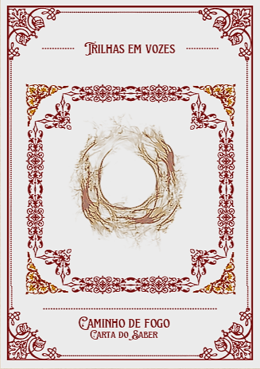
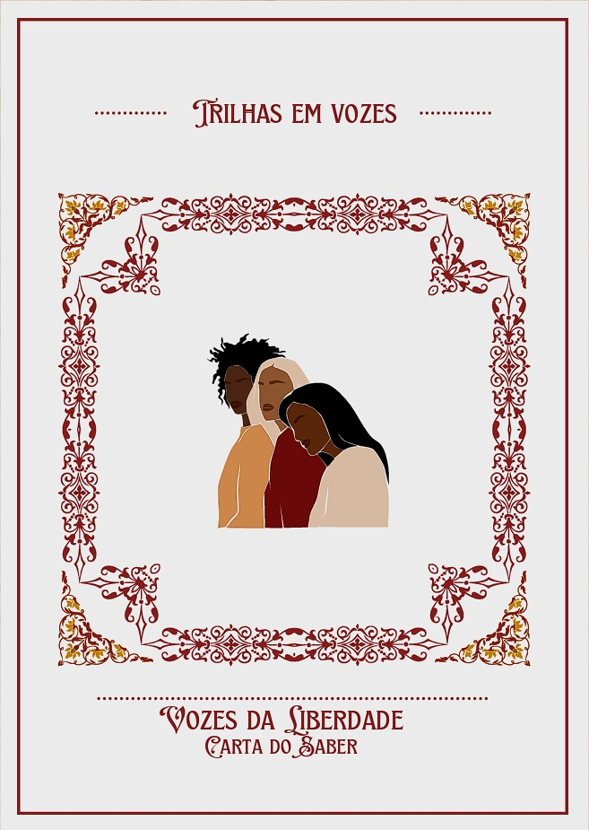

- Escola SESI
-
Outros Sites
Projeto Interárea
A importância de uma história contada por quem viveu
Trilha de vozes

Cite os motivos pelos quais a participação de Camaçari no percurso do Fogo Simbólico da Independência da Bahia é importante para preservar a memória histórica da região.

Quem foi Maria Felipa de Oliveira e por que sua história é importante para a Independência da Bahia?
O que é Pretuguês e como esse conceito ajuda a compreender a influência africana na língua portuguesa falada no Brasil?
Coloque-se no lugar de um historiador que descobriu que uma mulher negra teve uma participação importante na história de Camaçari, mas seu nome nunca foi mencionado nos livros didáticos. Com as informações que receber sobre ela, explique e defenda por que essa história deveria ser conhecida pela comunidade.
Uma marisqueira de Camaçari conta a você histórias sobre conhecimentos transmitidos por sua mãe e sua avó, com os quais você nunca teve contato, mas que reconhece como úteis para a cultura local. Você tenta compartilhá-los com outros historiadores, porém eles não dão ao assunto a seriedade que ele merece. Como você defenderia a importância desses conhecimentos?